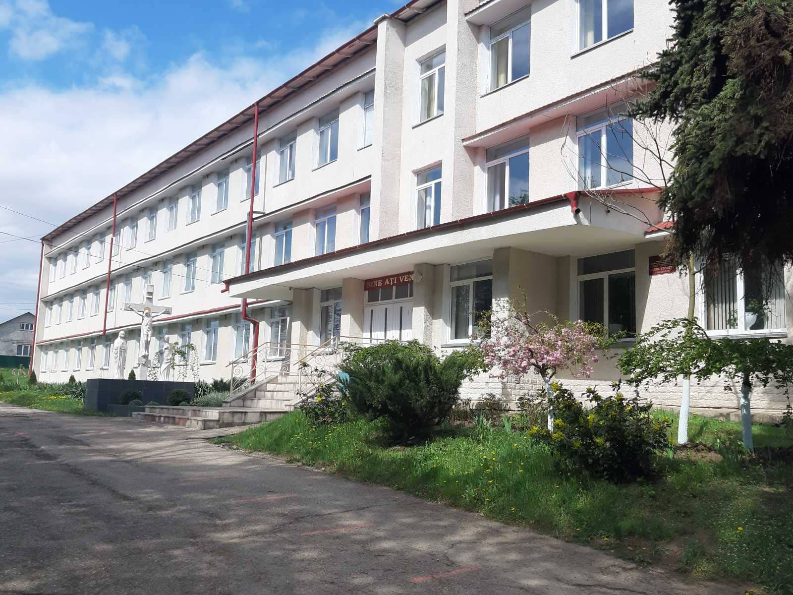
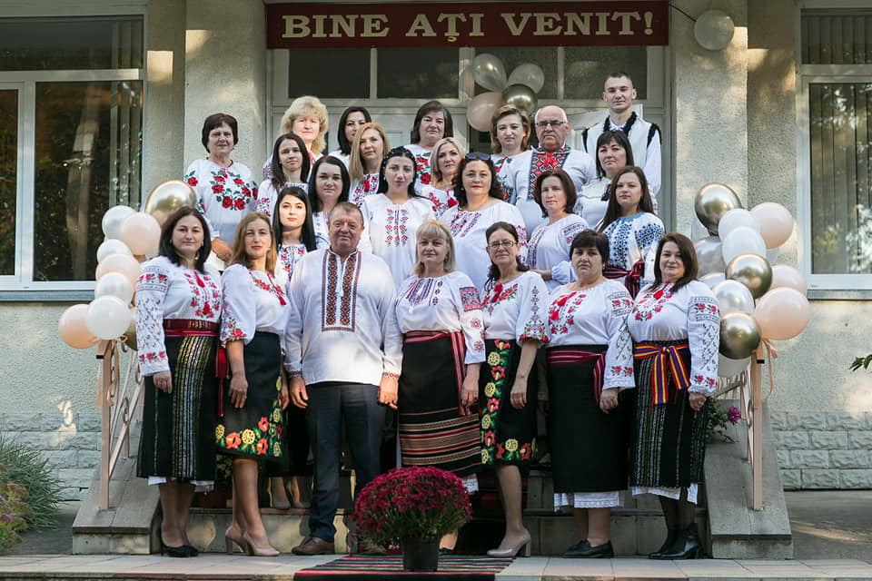
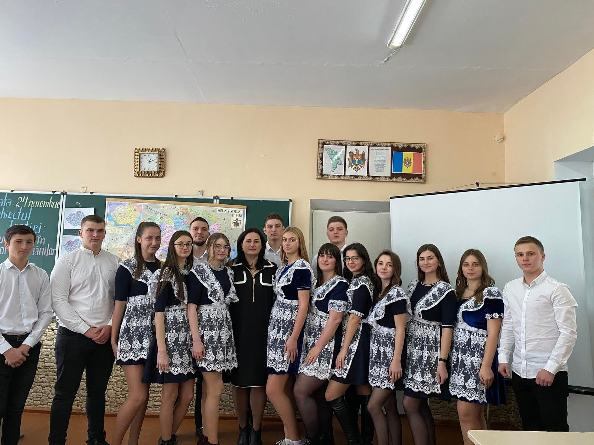

Liceul Teoretic Grimăncăuți dispune de:
Infrastructură dezvoltată.
Activitatea educațională a elevilor se desfăşoară în imobilul cu suprafața totală interioară 4000 m2. Suprafaţa claselor (inclusiv a cabinetelor de studii şi laboratoarelor) constituie 2200 m2. Numărul de sali de clase este de 25 în care pot face studiile 650 elevi. Liceul dispune de sala performanta pentru lecțiile de chimie. Bine sun dotate sălile de clasă pentru biologie, geografie, istorie, fizică. biblioteca, blocul sanitar și cantina corespund cerințelor. Sala de sport și sala de festivități a fost renovată capital. Liceul Teoretic Grimăncăuți este bine asigurat cu tehnică de calcul, și anume: desctop Pc-20, laptop- 14, proiector multimedia- 5, tablă interactivă -1, tablete PC-2. Toate sălile de clase sunt conectate la internet.
Corp didactic profesional.
Colectivul Liceului Teoretic Grimăncăuți este format din 4 cadre de conducere, 31 de cadre didactice, 5 personal didactic auxiliar. Profesorii dispunde grade didactice: 1-GDS, 3-GDÎ, 20 GDD. Corpul didactic demonstrează cunoştinţe în domeniul psihopedagogiei. Asigură accesibilitatea conţinuturilor şi utilizarea individualizată şi diferenţiată a strategiilor de predare-învăţare-evaluare. Demonstrează competenţe de realizare a curriculumului şi de respectare a actelor normative în vigoare în proiectarea unui demers educaţional de calitate.
Elevi dotați.
În liceu în fac studiile 337 de levi, clasa 1-4 127 levi, clasa 5-9 154 elevi, clasa 10-12 64 elevi, care sunt încadrați în 18 clase de elevi.